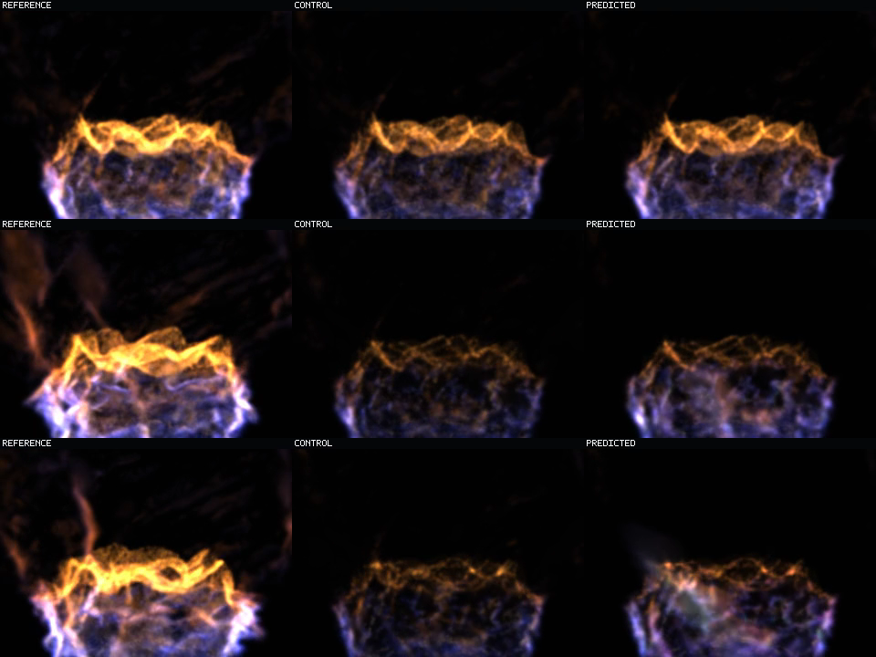
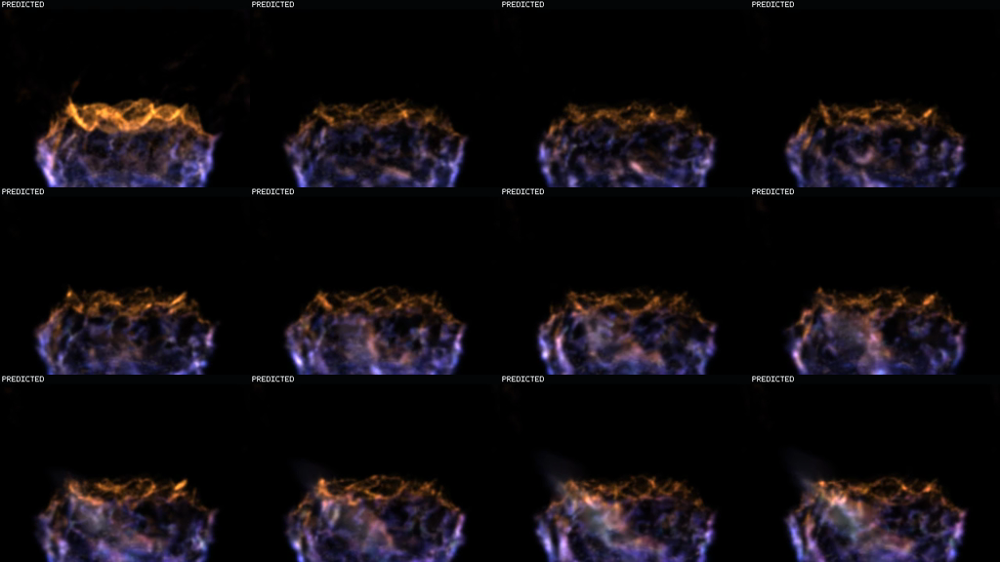

Response-Anchored Phase Continuation
Visual interpretation corrected: this diagnostic reapplies a changing exact-target cohort opacity mask to all roles, so the frozen middle payload moves visually and becomes sparse. Do not use it to judge raw present-state reuse versus recurrent product-view motion. Open the unmasked product-view correction; its control is pixel-identical and both recurrent candidates expose a saturated low-frequency collapse.
Research question: can a frozen generation-two response anchor preserve late recurrent state fidelity while retaining online exposure's energy gain?
Measured answer: yes on this one 10.08-second held-out basin. Every final-quarter state cohort and every aggregate/final-quarter energy cohort improves versus generation two. Transport and birth still cross persistent identity loss at step 58; neither crosses earlier.
Visual answer: the anchor preserves visibly changing interior and boundary structure through the final frame, but remains substantially dimmer and lower-frequency than exact reference. This is mitigation, not recovery of the exact tall flame sheet.
Exact held-out target at each time.CENTER: CONTROL
Copied-current state on exact registered cohorts.RIGHT: PREDICTED
Learned recurrent state on protected exact occupancy.
Every video is 63 frames at 6.25 fps, simulator time 0.16-10.08 s, and does not loop. Beauty attenuates stable Q1/Q2 to 0.1 opacity and unmatched/death to 0.05 so motion-bearing support remains legible. The reference is an exact-state offline splat raster, not an analytical raymarch.
Generation-Two Baseline: Beauty
The frozen recurrent baseline. Compare the right-hand predicted role with the response-anchored candidate below, especially after 7.68 seconds.
Response-Anchored Candidate: Beauty
H12 current-model online exposure at 0.625, with generation-two response anchoring at weight 1.0 on all 3,172,568 predicted-input exposure rows.
Start / Middle / Late Context
Rows are steps 1, 32, and 63 (`0.16`, `5.12`, `10.08 s`). Columns are labeled inside the image as reference, control, and response-anchored predicted. The predicted ridge remains weaker than reference but does not become a copied frame.

Response-Anchored Predicted Motion
Twelve predicted frames, left-to-right and top-to-bottom: steps 1-61 at stride six, followed by the exact final step 63. This sheet is for temporal distinctness and collapse inspection; it is not an exact-reference error map.

Partial Cohort Debug: Generation Two
Display-only additive cohort mix at gain 0.625. Green is Q1/Q2, yellow Q3, red Q4/death, blue transport, magenta birth, orange unmatched/death. State is unchanged.
Partial Cohort Debug: Response Anchored
The same roles, exact support, and debug gain. Use this to inspect whether the additional visible energy is moving transport/birth support or merely static material.
Metric Delta Versus Generation Two
| Cohort | Late state baseline | Late state anchored | Late energy baseline | Late energy anchored |
|---|---|---|---|---|
| Q1 | 0.886588 | 0.852241 | 0.440313 | 0.440930 |
| Q2 | 0.907371 | 0.897432 | 0.296504 | 0.304249 |
| Q3 | 0.920295 | 0.916316 | 0.256743 | 0.266141 |
| Q4 | 0.987215 | 0.983843 | 0.214598 | 0.223352 |
| Transport | 1.014349 | 1.009037 | 0.197553 | 0.205879 |
| Birth | 1.041520 | 1.037722 | 0.203544 | 0.212499 |
Beauty PSNR baseline to anchored: all frames 14.305862 -> 14.374841 dB; steps 49-63 14.470845 -> 14.558301 dB. These are isolated-raster comparisons to exact-state splats, not analytical-raymarch scores.
Claim Boundary
One held-out basin, deployed 16-feature contract, fixed transport, protected exact occupancy, isolated offline splat raster. This does not establish unsupported occupancy synthesis, multi-basin generalization, indefinite stability, analytical-raymarch agreement, live renderer integration, or operator acceptance.